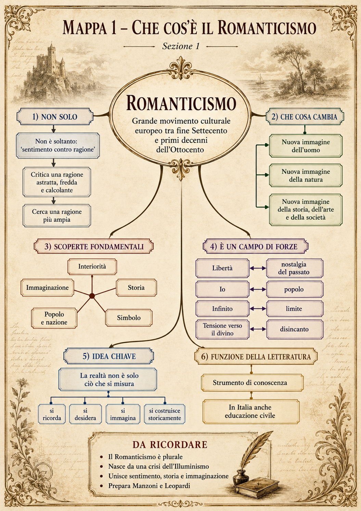
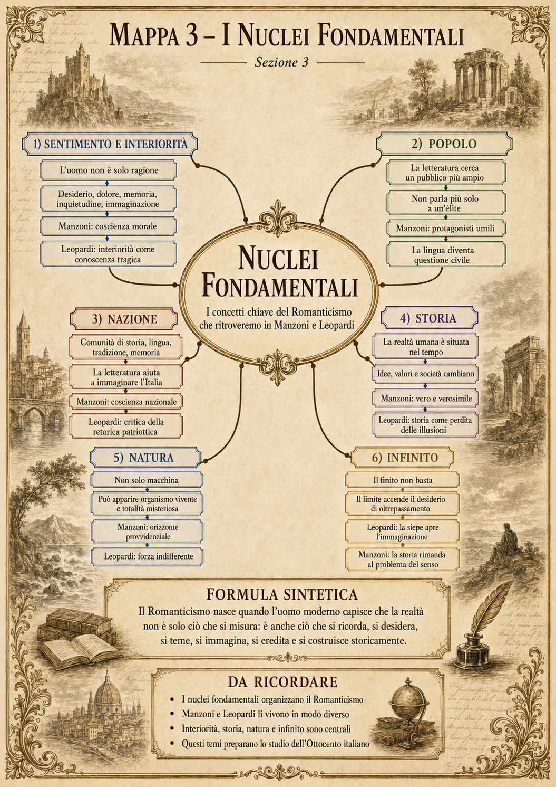
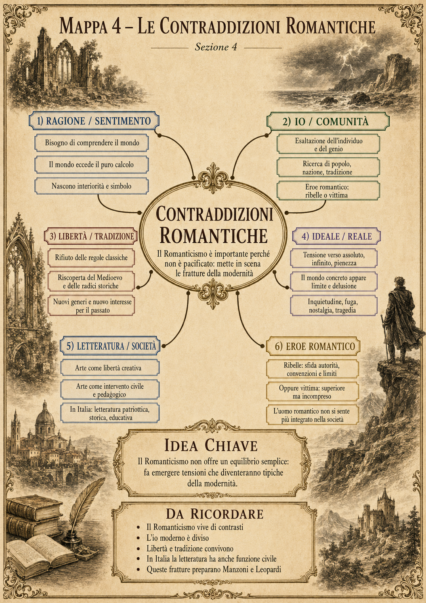
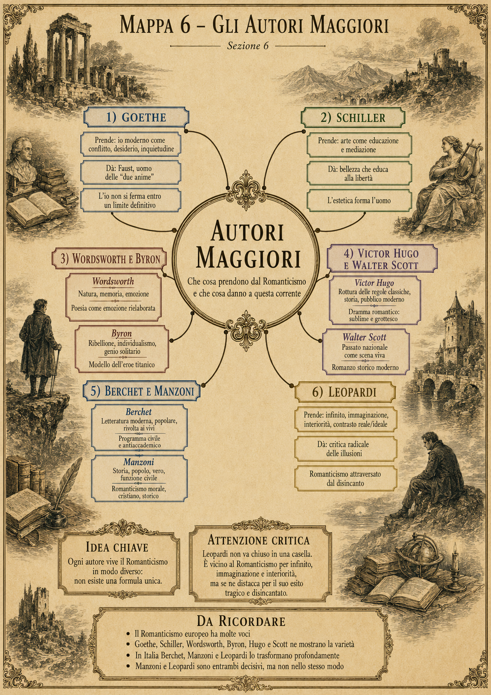
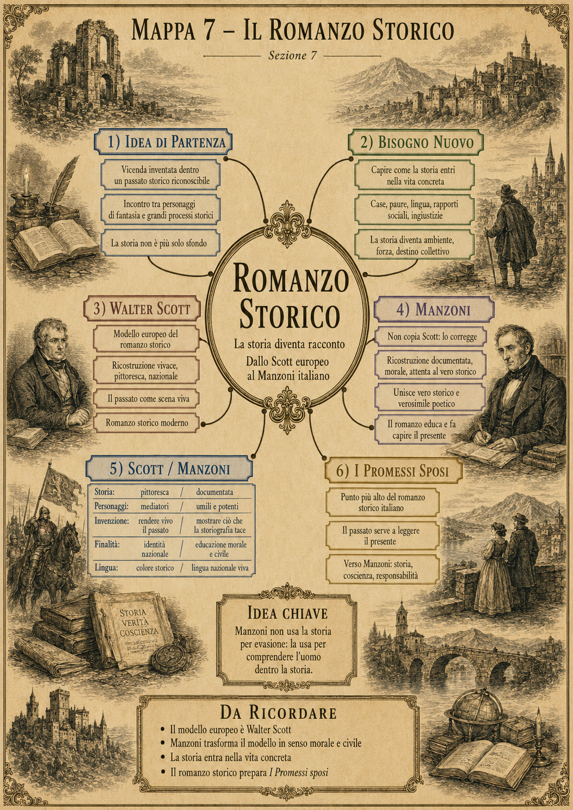
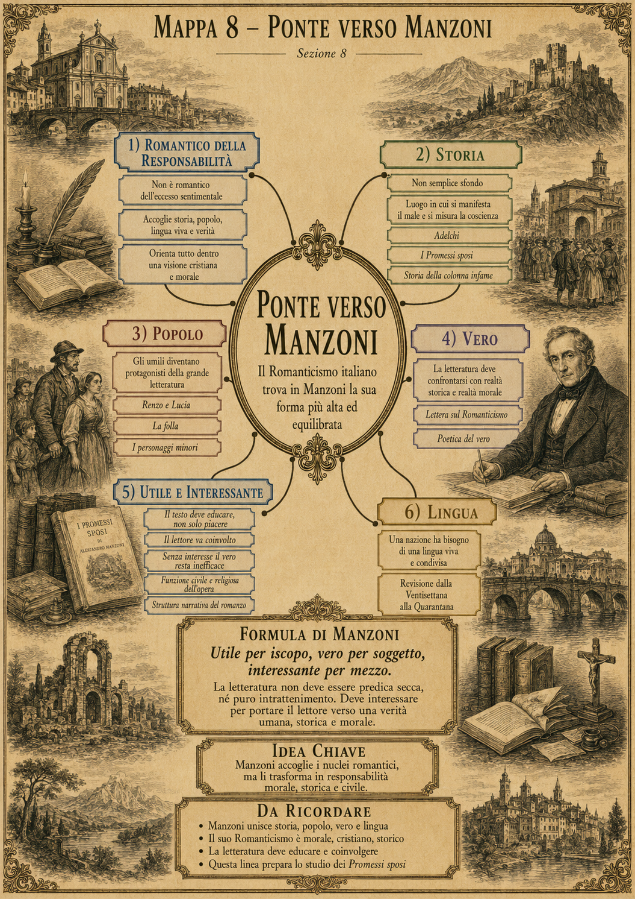
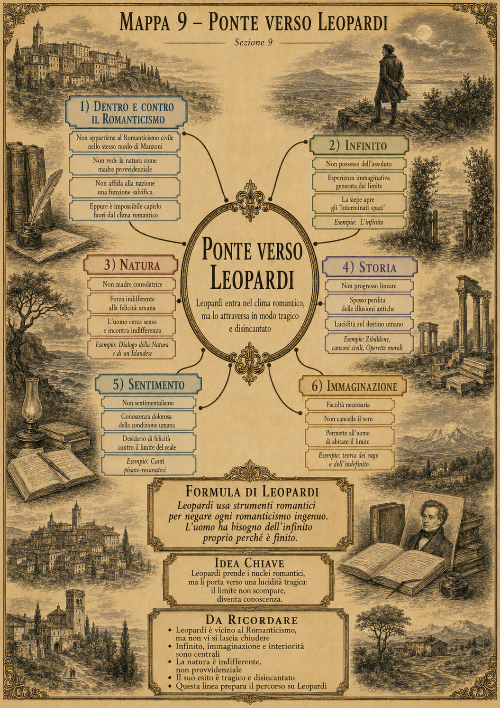
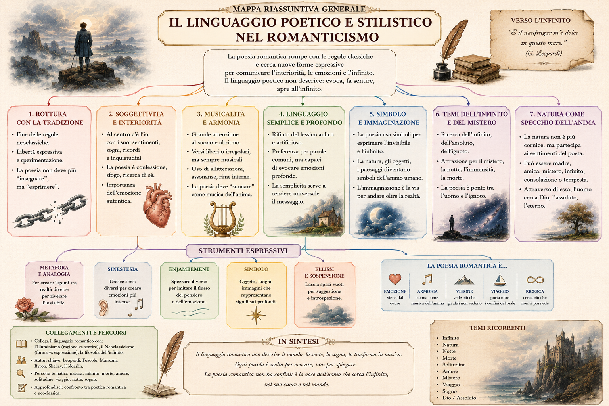
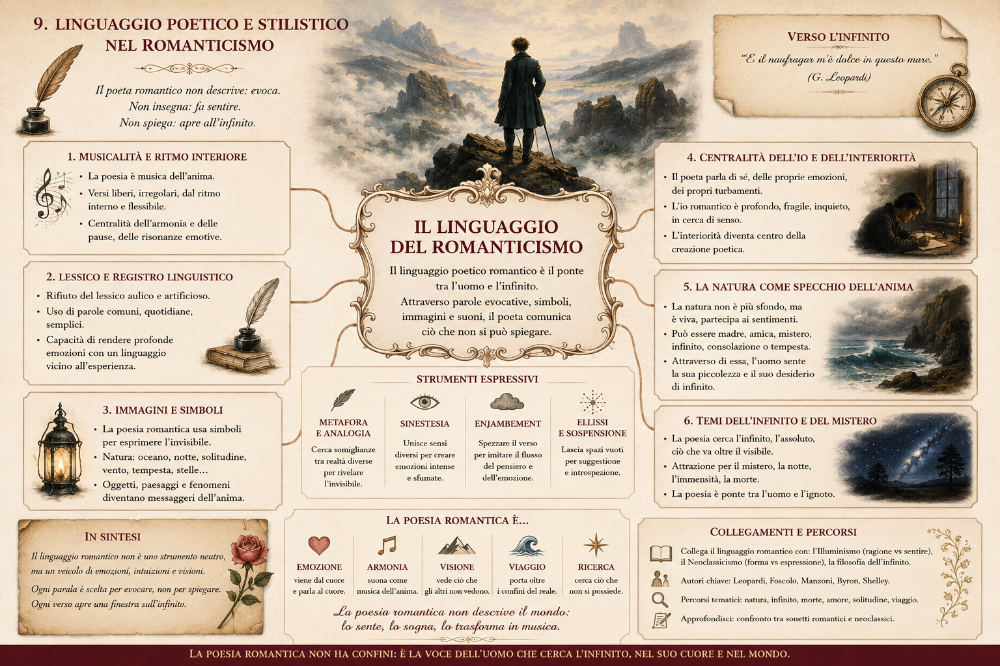
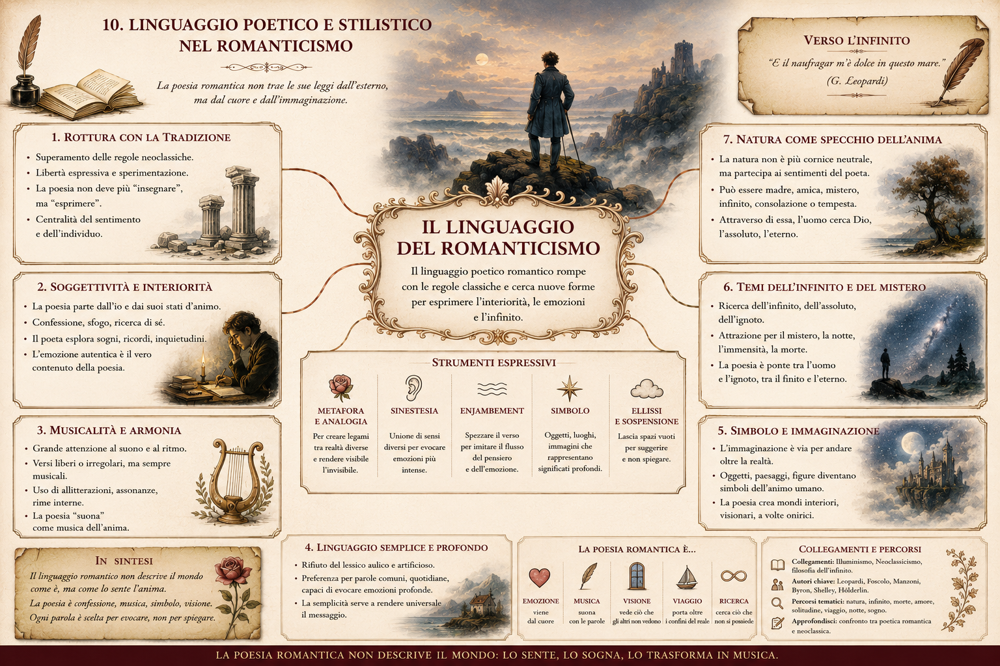

La copertina è attiva: premi sulle schede, sui temi o sui tre riquadri finali.Inizia il percorso →
idea guida
Una porta d’ingresso a Manzoni e Leopardi
Il Romanticismo non è solo “sentimento contro ragione”. È la risposta inquieta alla crisi della modernità: l’uomo scopre l’interiorità, la storia, il popolo, la nazione e l’immaginazione come modi per dare senso a un mondo che non appare più ordinato e stabile.
La PWA funziona come indice vivo: ogni scheda apre una breve lezione, una mappa e un collegamento agli autori dell’Ottocento romantico italiano.
9lezioni brevi
12mappe e schemi
2ponti d’autore
1quiz finale
percorso
Lezioni essenziali
Brevi, ma non banali: ogni sezione chiarisce un nodo e lo collega a Manzoni e Leopardi.

Che cos’è il Romanticismo
Un grande movimento culturale europeo che trasforma uomo, storia, natura, arte e società.
Il Romanticismo non cancella la ragione: rifiuta una ragione astratta, fredda e calcolante. Vuole una ragione più ampia, capace di includere sentimento, immaginazione, storia, simbolo e interiorità.
È plurale: esistono molti Romanticismi nazionali.
Nasce da una crisi dell’Illuminismo, non da una sua eliminazione.
Fa della letteratura uno strumento di conoscenza e, in Italia, di educazione civile.
La nascita europea
Germania, Inghilterra, Francia e Italia non dicono la stessa cosa: il movimento è policentrico.
In Germania prevale il laboratorio filosofico; in Inghilterra natura e interiorità; in Francia la battaglia teatrale contro il classicismo; in Italia la funzione civile della letteratura.
1798: Lyrical Ballads.
1797-1802: Jena e primo Romanticismo tedesco.
1816: polemica classico-romantica italiana.
1827: Prefazione al Cromwell e I Promessi sposi.

I nuclei fondamentali
Sentimento, popolo, nazione, storia, natura e infinito: i concetti che preparano l’Ottocento.
Questi nuclei non sono etichette: sono modi diversi di rispondere alla crisi moderna. Manzoni li orienta verso storia, coscienza e responsabilità; Leopardi li porta verso limite, infinito e disincanto.
Formula: la realtà non è solo ciò che si misura; è anche ciò che si ricorda, si desidera, si teme, si immagina e si costruisce storicamente.

Le contraddizioni romantiche
Il Romanticismo vive di tensioni: ragione/sentimento, io/comunità, libertà/tradizione.
Il movimento è importante perché non è pacificato. Mostra le fratture dell’uomo moderno: bisogno di comprendere e coscienza che il mondo eccede il calcolo; libertà creativa e bisogno di appartenenza; infinito desiderato e limite reale.
Il Romanticismo italiano
Più civile che “maledetto”: una letteratura per un paese diviso e ancora da costruire.
La domanda italiana è concreta: quale letteratura serve a un paese senza unità politica e linguistica? La risposta romantica è una letteratura utile, viva, civile, capace di parlare ai vivi e di costruire coscienza nazionale.
1816: polemica classico-romantica.
Berchet: poesia non per pochi.
Risorgimento: letteratura come costruzione simbolica della nazione.

Gli autori maggiori
Ogni autore prende qualcosa dal Romanticismo e lo trasforma: da Goethe a Leopardi.
Goethe mostra l’io diviso; Schiller l’arte come educazione; Wordsworth natura e memoria; Byron il ribelle titanico; Hugo il dramma moderno; Scott il romanzo storico; Berchet il programma civile; Manzoni e Leopardi trasformano tutto in due direzioni opposte.

Il romanzo storico
La storia diventa racconto: da Walter Scott a Manzoni, dal passato alla coscienza.
Il romanzo storico racconta una vicenda inventata dentro un passato riconoscibile. Manzoni non copia Scott: lo corregge. Il passato non serve a evadere, ma a capire l’uomo dentro la storia.

Ponte verso Manzoni
Storia, popolo, vero, utile, interessante e lingua: Romanticismo della responsabilità.
Manzoni accoglie i nuclei romantici, ma li orienta dentro una visione cristiana e morale. La sua formula è: utile per iscopo, vero per soggetto, interessante per mezzo.

Ponte verso Leopardi
Dentro e contro il Romanticismo: infinito, immaginazione, natura indifferente e limite.
Leopardi usa strumenti romantici per negare ogni romanticismo ingenuo. Non dice: “l’infinito ci salva”. Dice: “l’uomo ha bisogno dell’infinito proprio perché è finito”.
tempo storico
Timeline interattiva
Premi una data per leggerne il significato nel percorso.
nodi critici
Approfondimenti
Romanticismo europeo
Non è un blocco unico. È una costellazione: in Germania il problema dell’io e dell’infinito, in Inghilterra la natura come esperienza interiore, in Francia la rottura delle regole classiche, in Italia la funzione civile e nazionale.
Area
Nodo
Funzione
Germania
Io, natura, infinito
Laboratorio filosofico
Inghilterra
Natura, memoria, emozione
Riforma del linguaggio poetico
Francia
Sublime e grottesco
Battaglia culturale moderna
Italia
Popolo, nazione, storia
Letteratura civile
Linguaggio poetico e stilistico
Il poeta romantico non descrive soltanto: evoca, fa sentire, apre all’infinito. La lingua cerca musicalità, simbolo, immagini, sospensione, legami invisibili tra mondo esterno e mondo interiore.
Metafora, analogia, sinestesia, enjambement, simbolo, ellissi. Non sono ornamenti: servono a dire ciò che il linguaggio logico non contiene.
Accoglie storia, popolo, lingua viva e vero, ma li piega verso una visione cristiana e morale. Il suo Romanticismo è storico, civile, educativo.
Leopardi: lucidità tragica
È vicino al Romanticismo per infinito, immaginazione e interiorità; se ne distacca perché non concede consolazioni facili. Il limite non scompare: diventa conoscenza.
Il romanzo storico
Da Scott a Manzoni: la storia diventa ambiente, forza e destino collettivo. Manzoni la usa per comprendere l’uomo, non per evadere nel passato.
quadri visivi
Mappe e schemi
Apri ogni immagine a schermo pieno. Le mappe sono pensate per stampa e ripasso.
1. Che cos’è
2. Nascita europea
3. Nuclei
4. Contraddizioni
5. Italia
6. Autori
7. Romanzo storico
8. Manzoni
9. Leopardi

Linguaggio poetico

Stile poetico

Simboli e infinito
figure chiave
Autori-nodo
Goethe
io divisoFaust
Mostra l’uomo moderno come conflitto, desiderio e inquietudine: l’io non si ferma entro un limite definitivo.
Schiller
educazione esteticalibertà
Fa dell’arte una mediazione tra impulso e ragione: la bellezza può formare l’uomo.
Wordsworth
naturamemoria
La poesia nasce dall’emozione rielaborata nella tranquillità: non sfogo, ma forma del ricordo.
Byron
ribellioneeroe titanico
Rende potente il modello del genio solitario, affascinante e distruttivo.
Victor Hugo
sublime/grottescoteatro
Il dramma romantico mescola registri diversi perché l’uomo moderno è contraddizione.
Walter Scott
romanzo storicopassato vivo
Offre il modello europeo del romanzo storico: il passato come scena viva della nazione.
Berchet
poesia dei vivipubblico
Traduce in Italia il Romanticismo in programma civile, moderno e antiaccademico.
Manzoni
veroutilepopolo
Un Romanticismo morale, cristiano e storico: la letteratura deve educare e coinvolgere.
Leopardi
infinitolimitedisincanto
Attraversa il Romanticismo portandolo verso una conoscenza tragica della condizione umana.
verifica
Quiz finale
Una verifica rapida, utile per vedere se i collegamenti fondamentali sono chiari.